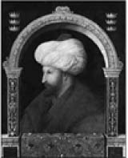
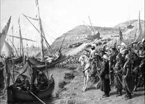
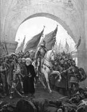

Sultan II. Mehmet, Ressam Gentile Bellini, 1480
Fatih Sultan Mehmet (1431-1481)
30 Mart 1431 Pazar günü Edirne’de dünyaya gelen II. Mehmet, çocukluğundan itibaren devrin ileri gelen alimlerinden eğitim aldı.
Devlet idaresini öğrenmesi amacıyla Manisa’ya vali olarak gönderildi. On iki yaşında babası Sultan II. Murat tarafından tahta çıkarıldı.
Bu genç padişahın tecrübesizliğinden yararlanmak isteyen dönemin Avrupa devletleri bir haçlı ordusu kurarak bölgedeki Türk hâkimiyetini sona erdirmek için yola çıktılar.
Durumun ciddiyeti üzerine vezirleriyle görüşen genç padişah, babası II. Murat’ı yeniden tahtı devralması için Edirne’ye davet eder.
Babası bu davet üzerine oğluna şu haberi gönderir:
“Bizim tahtı oğlumuza bırakmaktan maksadımız, yorucu geçen ömrümüzün son yıllarını rahat ve huzur ile yaşayıp ibadetlerimizi yapmaktı. Saltanat kimde ise din ve devleti savunmak da onun görevidir.”
Sultan II. Mehmet bu haber üzerine babasına şu cevabı yazar:
“Saltanat senin ise, düşmanlar topraklarımızı alarak ilerlemektedir. Osmanlı Devleti ve İslam dünyası tehlikededir. Eğer saltanat benim ise, ordunun başına geçmeniz için fermanım vardır. Göreviniz ihtar olunur!”
Bunun üzerine Edirne’ye gelen II. Murat ordusuyla Varna’ya hareket eder ve 1444 yılında büyük bir zafer kazanarak Osmanlı’nın bölgedeki gücünü perçinler.
1451 yılında babası vefat edince ikinci kez tahta çıkan II. Mehmet bu kez on dokuz yaşındadır.
Yıllardır içinde biriktirdiği İstanbul’u alma özlemini gerçekleştirme vakti gelmiştir. Bunun için hazırlıklara başlayan genç padişah, Rumeli Hisarı’nı dört aydan daha kısa bir sürede inşa ettirerek İstanbul’un Karadeniz’den ikmal yolunu kontrol altına alır. Dönemin en ağır topları onun zamanında döktürülür. Bu toplar 600-700 kilo ağırlığındaki granit gülleleridir ve 1200 metreye kadar fırlatabilir niteliktedir.
Gece gündüz İstanbul’un fethini düşünen, elinde İstanbul’un haritasıyla sürekli planlar yapan II. Mehmet, tüm hazırlıklarını tamamladıktan sonra 6 Nisan’da İstanbul’u kuşatır.
Bizans İmparatoru XI. Konstantin Paleologos, genç padişaha elçiler gönderir. Bizans İmparatoru bazı yerlerin Osmanlı Devleti’ne verilmesi karşılığında kuşatmayı kaldırması teklifinde bulunur.
Genç hükümdar gözünü ufuklara dikerek elçilere şu cevabı verir:

Gemilerin karadan Haliç’e indirilmesi, Ressam Fausto Zonaro
“Benim gerçekleştireceğim şeylere, sizin hayalleriniz dahi uzanamaz.”
Kuşatma çok zor geçiyordu. Bugüne kadar çeşitli devletlerce defalarca kuşatılmasına rağmen alınamayan İstanbul, bu genç hükümdarın azmine daha fazla direnebilecek miydi? Bizanslılar kuşatma şiddetlendikçe elçi üstüne elçi gönderiyor, ancak her seferinde ret cevabını alıyorlardı. Hatta bir keresinde genç padişahtan ümitlerini kıran şu cevabı aldılar:
“Ya ben şehri alırım, ya şehir beni!”
Genç padişah bu kuşatmada o güne kadar uygulanmamış teknikler kullanıyordu. Bu tarihe kadar atıştan sonra soğuması beklenen ateşli silahlar artık zeytinyağı dökülerek soğutulmaya başlamış, böylece yağ ile makine soğutma sistemi tarihte ilk kez kullanılmıştı. Havan topunun planları çizilerek dik mermi yollu silah da ilk kez bu kuşatmada kullanılmaya başlandı.
Kasımpaşa tarafından başlanarak boş fıçılar üzerine kalaslar bağlanarak Haliç üzerine yapılan köprü çalışmasını gören Bizanslılar, Türklerin su üstünde yürüdüğünü düşünerek, sihir yaptıklarını zannetmişlerdir.
İstanbul’un alınması için her yol deneniyordu. “Bu olmaz” denilecek şeyler çok kısa bir sürede gerçekleştiriliyordu. Nitekim 22 Nisan gecesi Beşiktaş’ta bulunan Türk donanması kara yoluyla Haliç’e indirildi.

Fatih Sultan Mehmet istanbul’a girerken, Ressam Fausto Zonaro
Tüm bu çabalar 29 Mayıs 1453 sabahı sonuçlandı. İstanbul’u alan II. Mehmet, yirmi bir yaşında Fatih unvanıyla bir devrin kapanmasını sağladı. Böylece ortaçağ kapandı ve yeniçağ başladı.
Atının üzerinde ordusuyla şehre giren Fatih Sultan Mehmet, dervişlerden birinin atının yularına yapışmasıyla irkilir. Derviş, “Padişahım! İstanbul’u biz dervişlerin duaları sayesinde aldığını unutma” der.
Genç padişah dervişin hâline bakıp hafifçe gülümse-dikten sonra, “Doğru söylersin” der, hareket ederken de eliyle kılıcını işaret ederek, “Ama sen de şu kılıcın hakkını unutma!”
İstanbul’un fethinden sonra batıya ve doğuya pek çok sefer düzenleyen Fatih Sultan Mehmet, buralardan da önemli zaferlerle döner. Yapacağı seferlerden en yakınlarına bile bahsetmeyen büyük hükümdar, “Sırrıma sakalımın bir tek telinin vâkıf olduğunu bilsem, onu yolar, atarım” sözüyle savaşta gizlilik ilkesine olan duyarlılığını dile getirmiştir.
Kırk dokuz yaşında, 3 Mayıs 1481’de vefat eden büyük hükümdarın, İtalya seferi için yola çıktığında, sayısız düşmanlarının sayısız zehirleme çabalarından birine yenik düştüğü sanılıyor.
İstanbul’un fethi sırasında orada bulunan İtalyan tarihçi Zorzo Dolfin onun hakkında şöyle yazar:
“Sultan Mehmet, çok az gülerdi. Zekâsı, daima bir çalışma hâlindeydi. Çok cömertti. Her işte fevkalade atılgan,hatta cüretkârdı. Seçtiği hedeflere erişmek için çok ısrar ederdi. Soğuğa, sıcağa, açlığa, susuzluğa dayanıklıydı. Kesin konuşur, kimseden çekinmezdi. Zevk ve sefadan uzaktı. Türkçe, Yunanca ve Sırpçayı çok iyi konuşurdu. Her gün belirli bir süre boyunca okurdu. Roma tarihi, başka devletlerin tarihi, Laerce, Tite-Live, Herodot, Quinte-Curce, Papalar, Alman İmparatorları ile Fransa ve Lombardiya krallarının dönemleri okuduğu tarihi kitaplar arasındaydı. Avrupa’daki bütün devletleri tanırdı. Özellikle İtalya’nın coğrafyasını en ince noktasına kadar bilir ve bir Avrupa haritasını yanından ayırmazdı. Askeri ve coğrafi ilimlerle meşgul olur, araştırmalar, incelemeler yapardı. Tabiiyeti altında bulunan ülkelerin âdet ve şartlarını devletin ve bölgenin menfaatlerine kullanma yeteneğine sahipti.”